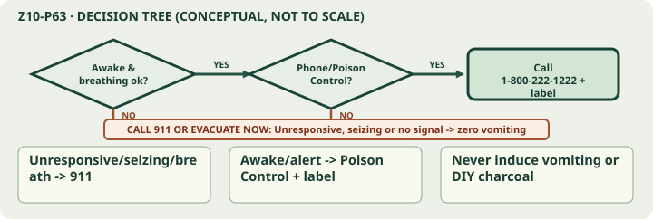

Z10-P63 · Wilderness medicine · New manuscript
Separate 911 emergencies from Poison Control calls after toxic ingestions
Deliver exact substance details to toxicology specialists rapidly while preventing dangerous improvised vomiting or home antidotes.
When it applies · Accidental swallowing, inhalation, or skin exposure to unknown wild plants, mushrooms, camp fuel, water chemicals, or household toxins.
Equipment · Container/label or safely bagged plant/mushroom specimen (no bare-hand contamination), watch, and phone access.

Actions
- Call 911 IMMEDIATELY if the person is unresponsive, drowsy, seizing, struggling to breathe, or having chest pain; if the person is awake and alert with no immediate life threat, call U.S. Poison Control (1-800-222-1222) immediately for specialist guidance.[M15, M16, T02]
- Save the exact chemical bottle, medication label, or intact plant/mushroom fragment (handled safely in a bag) plus approximate amount and time of exposure so toxicologists and clinicians can identify the exact agent.[M16, M20]
- NEVER induce vomiting, give syrup of ipecac, force milk/saltwater, or administer improvised camp charcoal unless explicitly directed by Poison Control or an emergency clinician—vomiting caustics or fuels burns airways and lungs severely.[M15, M16]
Failure recognition · Forcing a child who sipped stove fuel to vomit, driving hydrocarbons directly into the lungs and causing severe chemical pneumonia.[M15]
Verify · Confirm exact substance/container saved, exposure time noted, zero unguided vomiting induced, and 911 or Poison Control engaged.[M15, M16]
Stop or change course · In remote areas without phone access, evacuate immediately to clinical care after any unknown toxic plant, mushroom, fuel, or chemical ingestion.[M15, M16, T06]
Evidence and editorial notes
- M15 · NIH / MedlinePlus · Poisoning (current web edition)
- Section: Suspected Poisoning, Ingestion, and Toxic Exposure · Conditions: Accidental ingestion, inhalation, or skin/eye contact with toxic plants, chemicals, or medications
Support: Call 911 immediately if the person is unresponsive, seizing, or struggling to breathe; otherwise contact Poison Control (1-800-222-1222 in the U.S.) with exact substance details and do not induce vomiting unless directed.
Limitations: Improvised emetics or charcoal can worsen caustic or hydrocarbon injury. · Conflicting evidence: None; aligns with Poison Control guidance.
Editorial note: Separates 911 life-threat activation from Poison Control guidance. · Specialist reviewer: Medical toxicology and poison control
Primary source · checked 2026-11-24 - M16 · National Capital Poison Center · Poison Control Emergency Guidance (current web edition)
- Section: Emergency Poison Help Guidance and Substance Documentation · Conditions: U.S. non-life-threatening or evolving poisoning exposure
Support: Save the container, plant sample (handled safely), or chemical label for Poison Control and EMS; follow exact dispatcher or toxicology specialist instructions without giving home remedies.
Limitations: Requires phone/comms access; remote settings require early evacuation for unknown toxic ingestions. · Conflicting evidence: None; reinforces Poison Control hotline and container preservation.
Editorial note: Guides documentation and anti-folklore poison response in Z10. · Specialist reviewer: Poison control and emergency medicine
Primary source · checked 2026-11-24 - M20 · NIH / MedlinePlus · First Aid Overview (current web edition)
- Section: Lay First-Aid Scope, Kit Readiness, and Documentation · Conditions: Pre-trip kit preparation and remote patient monitoring
Support: Maintain an inspected, unexpired first-aid kit matched to your actual training, keep written patient observations (time, responsiveness, breathing, symptoms, interventions) for EMS handoff, and practice skills in certified courses.
Limitations: Carrying advanced medical instruments without clinical training adds risk rather than capability. · Conflicting evidence: None; aligns with ARC and NPS-K.
Editorial note: Anchors kit sizing, SOAP-style lay observation logs, and scope-of-practice cards. · Specialist reviewer: Wilderness EMS and clinical education
Primary source · checked 2026-11-24 - T02 · American Red Cross · First Aid Steps (current web edition)
- Section: First Aid Steps > Call 9-1-1 · Conditions: Lay emergency response to unresponsiveness, abnormal breathing or severe bleeding
Support: Activate EMS and get needed equipment. Follow dispatcher directions and act within training.
Limitations: Remote locations may delay EMS arrival, requiring sustained stabilization after activation. · Conflicting evidence: None; aligns with NPS-E.
Editorial note: Mandates early emergency activation and dispatcher adherence. · Specialist reviewer: EMS and wilderness medicine
Primary source · checked 2026-11-24 - T06 · NPS · Outdoor Emergency Plan (current web edition)
- Section: If you get lost or hurt; call for help · Conditions: Outdoor US emergency
Support: Communicate location, last known point, situation and needs. Stay put when unable to establish a safe route unless immediate danger requires movement.
Limitations: Cell signal is unreliable in backcountry terrain; pre-trip plans bridge communication gaps. · Conflicting evidence: None; core lost-person decision rule.
Editorial note: Foundation for stay/signal/move and dispatch handoff cards. · Specialist reviewer: Search and rescue
Primary source · checked 2026-11-24
Source lineage · NIH MedlinePlus Poisoning and Poison Control; new manuscript · Classification · New manuscript.